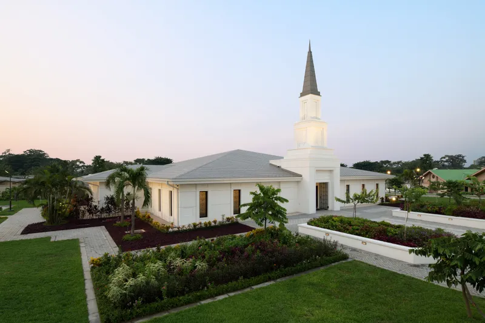

Temple Album
Home
Old
New
Large
Small
Home
Temple of nigeria
Aba

Temple of Kinshasa
Kinshasa
Temple of kona
Hawai
Temple of Kyuv
Ukraine
Temple of Lindon
Utah-Usa
Temple of Saratoga
Uta-Usa
Temple of Seattle
Washington-Usa
Temple of Seoul
Korea
Temple of Vernal
Utah-Usa